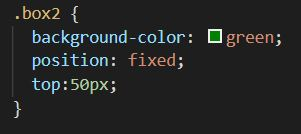

the position CSS property
Every single element on a web page is a block of pixels. The position property is used to get these
blocks of
pixels exactly where you want them to go.
This property has 5 different values:
In order to explain this property I created four boxes, each of a different color, using the following HTML and CSS code.
Static
This is the default for every single page element. It means that the element will flow into the page as it normally would. The elements are not affected by the top, bottom, left, and right properties.

Relative
The element is positioned relative to its normal position.
- If you set position: relative; on an element but no other positioning attributes (top, left, bottom or right), it will have no effect on it's positioning at all, it will be exactly as it would be if you left it as position: static;
- If you do give it some other positioning attribute, for example top:50px; , it will shift its position 50 pixels down from where it would normally be;
- By setting the position to relative you can use z-index on that element;
- A page element with relative positioning gives you the control to absolutely position children elements inside of it.
Absolute
These values will be relative to the next parent element with relative (or absolute) positioning. If there is
no such parent, it will be placed relative to the page itself.
You set the position by using positioning attributes top, left, bottom and right.
Fixed
The element is positioned relative to the viewport, or the browser window itself. That means it always stays in the same place even if the page is scrolled. In order to position the element, you need to use the top, right, bottom, and left properties.
Sticky
The element is positioned based on the user's scroll position.
Basically it is used for keeping something
shown on the screen throughout scrolling.
It is similar to fixed elements ( position: fixed;) as they both
maintain their position on the screen, even as the user scrolls up or down the page.
The difference is
that a sticky element remains confined to the parent container it is in.